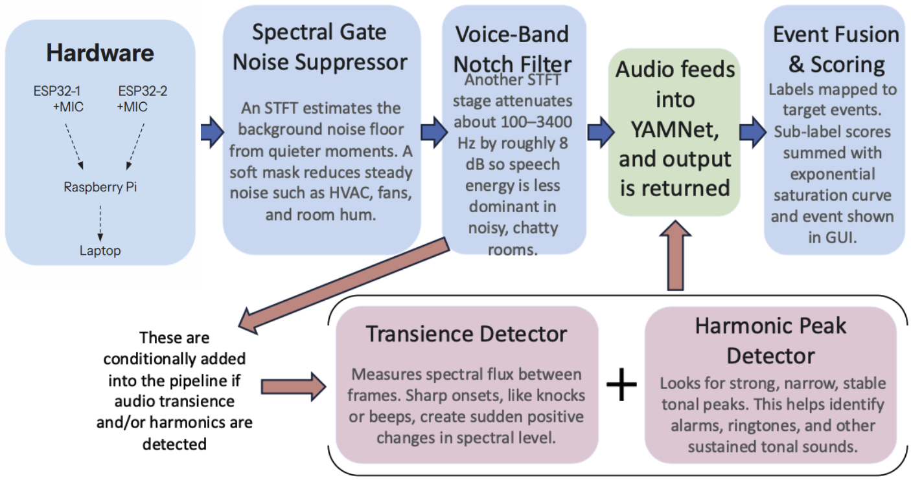
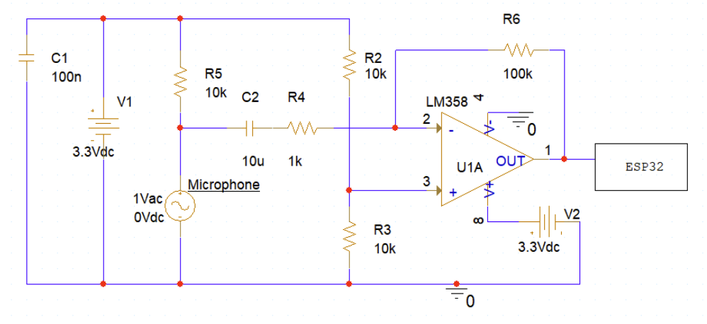
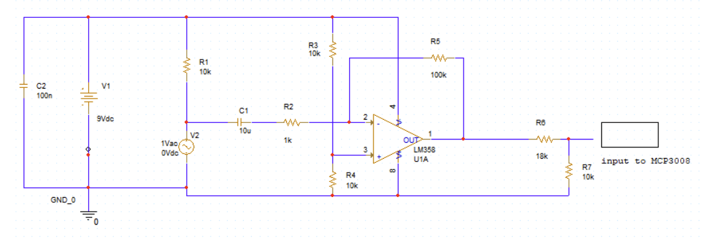
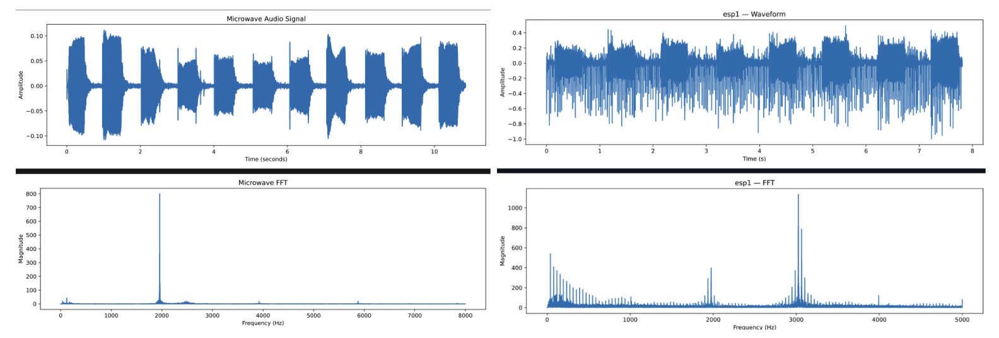
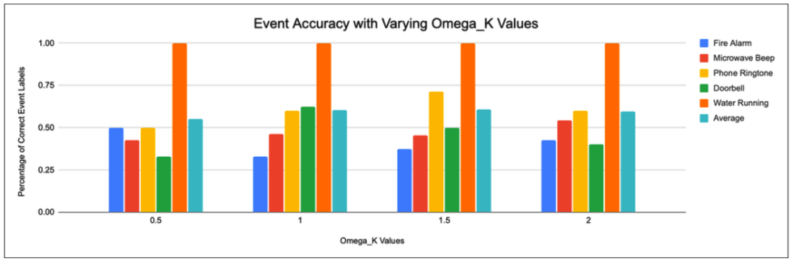
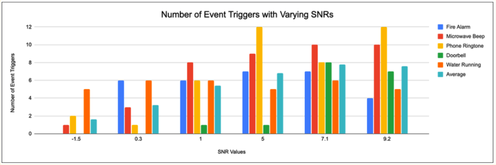
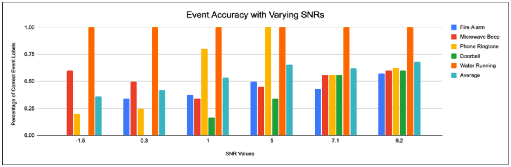
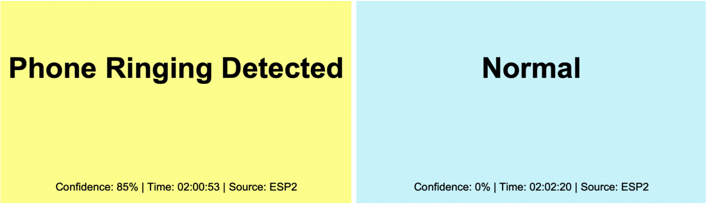

Everyday environments are filled with informational sounds — such as fire alarms, doorbells, microwave beeps, ringing phones, running water — that people who have auditory disabilities, or are simply out of earshot, can miss.
Everyday environments are filled with informational sounds (such as fire alarms, doorbells, microwave beeps, ringing phones, running water) that people who have auditory disabilities, or are simply out of earshot, can miss. The objective of this project was to design and build a real-time, ML-based audio classification device that reliably identifies a fixed set of accessibility-relevant sounds (even in noisy conditions) and communicates them through a visual display. This included real-time operation on two microphone circuits, and classification accuracy at low signal-to-noise ratios (SNRs).
We aimed to design and construct a circuit using two ESP32 microphones capable of data transfer through WiFi to a Raspberry Pi. The data is then uploaded to a laptop for real-time visual display. Then we built a digital audio-processing and classification pipeline capable of cleaning noisy audio and classifying a set of five sound events: fire alarm, phone ringtone, microwave beep, doorbell, and water running. There is a major emphasis on Fire Alarms as they imply that a life-threatening situation may be occurring. Lastly, we integrate hardware and software into a continuously running system, test its accuracy across different levels of noisy environments, and tune operating parameters for the best accuracy and latency compromise.
The final prototype is a real-time audio classifier running on two ESP32 microphone inputs, with a GUI (graphical user interface) that can be displayed on a personal computer. The created algorithm recovered a large fraction of the accuracy that it lost to room noise (after digital noise processing is done) without retraining the ML program (YAMNet). A tuned saturation coefficient Ω_K was found, and overall classification accuracy increased by at least 75% across every tested SNR value. The system maintains above 50% average correct-label accuracy across all five labels and reaches 100% accuracy on the “Water Running” event down to -1.5 dB SNR. The overall ESP32 microphone hardware is inexpensive and can be affordable as an actual product.
Approximately 1 in 8 people in the United States have hearing loss in both ears, and many more experience temporary or situational hearing limitations (sleeping, wearing headphones, being in a different room of the home) [1]. Commercial products addressing this problem (such as visual smoke alarms, synced lighting throughout a house, app notifications, etc.) are usually device-specific, expensive, and difficult to install. A general-purpose sound classifier that operates on a small circuit, and wirelessly connects to a visual display (such as a laptop) would fill this gap.
This project also builds on the ESE 3310 microphone-circuit laboratory developed by Prof. Wang, redesigning the microphone (model CMA-6542PF) amplifier circuit into an integrated audio-visual interface that detects and classifies a fixed set of sounds across a wide range of auditory environments, and displays the resulting identification visually in real time [2].
YAMNet is an open-source audio classification model trained on 521 audio classes [3]. It was decided upon as the foundation of the audio classification program because of its broad classification capability, and the plethora of instructions, literature, and walkthroughs regarding its use that were available.
The complete system consists of two ESP32 microphone circuits with analog filtration and wireless data transfer to a laptop, and software implementing the processing and classification pipeline shown in Figure 1.

Spectral Gate Noise Suppressor: This part of the system listens for steady, background sounds in the room, such as air conditioning, fans, and low hums, and turns them down. To do this, it uses a Short-Time Fourier Transform (STFT), where it divides the incoming audio into short slices and measures what frequencies are present in each slice. To determine what counts as noise, the program takes the quietest recent slices and classifies them as the room's baseline noise. It then creates a mask which lowers the magnitude of those frequencies rather than completely removing them. This prevents any potentially important audio from being removed entirely. Because the spectral profile of noise will differ between environments, the program continually updates its measuring and classification of baseline noise.
Voice-Band Notch Filter: This second stage turns down the range of pitches human voices occupy, which is roughly 100 to 3,400 Hz. The magnitude of reduction is capped at 8 dB deliberately so events such as doorbells and water running (which occasionally exist in this range as well) aren't fully cut-off. The frequency is capped at 3.4 kHz because alarms and ringtones contain a lot of high-pitched overtones above that threshold.
The cleaned 5-second audio window is fed into YAMNet, which returns a matrix of confidence scores mapped to different labels. Because YAMNet under weighs very short transient sounds (knocks and single beeps) and very long sustained tonal sounds (some alarms and ringtones), two detectors run in parallel and are conditionally added into the pipeline:
Since YAMNet spreads its confidence across many output labels rather than committing to a single event, the five target events (fire alarm, phone ringtone, microwave beep, doorbell, and water running) are each defined by a list of related YAMNet sub-labels (e.g. “water”, “faucet”, “drip”, and “shower” all under the event “water running”). For the event with the best confidence interval in one sample, the matching sub-label scores are summed and put through an exponential-saturation function:
where Ω_K is the coefficient that controls how strongly the sum of confidence values support the claim of the top sound. The exponential form guarantees the final confidence value stays between 0 and 1 regardless of how high the confidence level gets. This equation is crucial for classification as it allows us to combine evidence without over exaggerating the overall confidence level.
An event is finally reported only after a multi-frame voting check is passed. VOTES_REQUIRED is the number of times a specific sound needs to appear as number 1 in the last 10 samples before being declared as the confirmed sound being heard. Every reported event has a minimum cooldown before it can be triggered again. The full set of tunable parameters and their final values is summarized in Table 1.
| Parameter | Final value | Role |
|---|---|---|
| MIN_SCORE | 0.20 | Minimum per-event confidence that counts as a vote. |
| VOTE_WINDOW | 10 | Rolling buffer of the last N inferences used for voting. |
| VOTES_REQUIRED | 2 | Minimum agreeing votes within the window before an event fires. |
| COOLDOWN_S | 6.0 s | Minimum gap between two triggers of the same event. |
| INFER_WINDOW_S | 5.0 s | Length of audio window passed to YAMNet on each inference call. |
| INFER_EVERY_S | 0.5 s | How often inference runs (heavy window overlap). |
| Ω_K | 1.0 | Coefficient in the exponential-saturation event fusion; controls how influential the sum of sub-label confidences is. |
Two integrated ESP32 microphone circuits were built. Each board has an op-amp-based gain before sending signals to the ESP32, which transmits the signals to the Raspberry Pi over Wi-Fi. The Pi drives a GUI that displays the most recently detected event.

The work was divided into hardware and software. When developing software, YAMNet was analyzed to understand which of the initial parameters had to be changed in order to improve accuracy and decrease false positives. This includes personalization of VOTES_REQUIRED for specific sounds. For short burst sounds like a doorbell (and possibly phone ring) with long pauses in between, it would make sense for that number to be lower than the rest. Additionally, the spectral-flux transience detector and the harmonic peak detector was developed and implemented into the algorithm to help with these kinds of specific distinctions between sounds. Before the integration of software and hardware, all testing of the algorithm was done on a laptop to ensure time efficiency while the device was being developed. Testing was done in three different environments: a library, a dorm kitchen, and a building hallway. These were used to profile realistic noise floors.
The hardware development started with the lab microphone amplifier circuit from ESE 3310. First, we modified the microphone lab circuit from ESE 3310 so that the input from the microphone passes through an analog-to-digital converter to be processed on a Raspberry Pi.

There were several changes made to the circuit from the original lab circuit. Normally, sound inputs in the time domain are centered at 0 amplitude, but this will not work for our circuit. Because the Raspberry Pi will run on 3.3V, any voltage outside 0-3.3V will not be interpreted. Therefore, a voltage bias at 1.65V must be set, meaning the sound inputs are centered at 1.65V, and the circuit must limit voltage to hit maximums of 3.3V and 0V. The bias will be applied by changing R4 to 10K and voltage is lowered by implementing a voltage divider before feeding data to the MCP3008. The VCC was decreased to input 9V for future implementation of a 9V battery in PCB designs. In order to test this new circuit, we used an oscilloscope and Matlab to observe the output of the opamp through the MCP3008 circuit.
From auditory observation, it was clear that the USB mic had higher quality audio than the MCP3008 mic. Furthermore, the FFT of the output showed that the data using the ADC converter was limited to 2.4Khz. The audio recording limitations of the ADC converter circuit prevented any analysis of fire alarms and microwave sounds, which show peaks at 2Khz and 3Khz respectively. This is alarming because our circuit should have priority in detecting these signals. Because of this we explored other options for the microphone circuits.
Our second approach was the ESP32 microphone circuit. The ESP32 is advantageous because it has WiFi capabilities, which can be used in transferring audio data to the Raspberry Pi, and a built-in ADC. As shown in Figure 2, the microphone circuit is now attached to the ESP32 and not the Raspberry Pi. With this circuit design, we have the flexibility to collect audio data from multiple ESP32 units, which will transfer data to the Raspberry Pi. There were several changes to the circuit; first, because the ESP32 unit is powered by 3.3V, we powered all parts of the circuit with 3.3V. We removed the voltage divider and changed 9V to 3.3V.
We collected audio data from the ESP32 by compiling an algorithm through Arduino IDE that starts the ESP32 data collection on a specified WiFi port. We graph a sample of the data with a python file activated on the terminal. Data collection showed that the audio data sampled frequencies sufficient for the microwave and fire alarm signals. We used the ESP32 circuit moving forward in the project, and further along created another ESP32 unit and connection to a AA battery holder for portable use.
As mentioned previously, initial testing on the algorithm was done on a computer that used a high-end microphone with better capabilities. Therefore, when analyzing the 5 sounds to be detected, the patterns and distinctions that could be seen from the audio plots were not as clear when seen through the ESP-32 and lab circuit.

As seen in Figure 8, the microwave audio has two clear distinctions, which include the small bursts of rings and its high concentration of amplitude around 2 kHz. When the same audio is analyzed through the prototype in Figure 9, the bursts of waves aren't as clear and the concentration of amplitudes in frequency is not at 2 kHz anymore. These kinds of changes required the algorithm to be adjusted as filter ranges were placed on certain sounds to reduce noise. On top of this, there were certain checks that were implemented to prevent the misidentification of fire alarms with microwaves and vice versa, which also needed to be adjusted due to the changes.
The number of correctly triggered events was measured as Ω_K was varied (Figure 10). The detection rate rose as Ω_K increased from 0 toward 1, then plateaued. Above Ω_K = 1 there was no measurable gain in accuracy, so Ω_K = 1.0 was selected as the final operating value.

With Ω_K = 1.0 fixed, the system was evaluated against test recordings mixed to varying SNRs ranging from −1.5 dB to 9.2 dB. Figure 11 shows the number of events triggered as a function of SNR, and Figure 12 shows the corresponding correct-label rate (the fraction of triggers that matched the actual event).


A Flask website was made for the Raspberry Pi to upload the information to so a computer could use its IP address to access this information and display on the webpage. The GUI would display the necessary information, including: The heard sound, confidence value, the current time, and which microphone detected the sound.

All three project aims were met. 1) Hardware: produced two functional ESP32 microphone front ends with wireless data transfer and a visual display. 2) Software: produced a digital filtering and machine-learning pipeline that classifies the five target events. 3) Integration and Validation: produced a continuously running system whose accuracy was characterized over realistic SNR ranges and whose key parameters were tuned to operating points that balance accuracy and responsiveness.
The ESP32 circuits and auxiliary detectors do not attempt to outperform YAMNet, they instead pre-clean the input and cover its weak spots, while the label fusion turns YAMNet's diffuse confidence into higher accuracy event decisions. The voice-band notch is a deliberate tradeoff. It improves performance in chatty rooms but slightly attenuates events whose spectral signature exists inside the speech band, such as some doorbell tones. The lowest SNR value (−1.5 dB) was set by the test recordings used, and performance below that level was not directly characterized.
There were several performance tradeoffs that needed to be evaluated. Longer windows (10 s) improve accuracy on sustained sounds but can leave short events from triggering while being laggy. The chosen 5 s window with 0.5 s loops keeps latency low while still averaging out short-term noise. Additionally, 8 dB notch was empirically the biggest reduction that didn't noticeably suppress alarm and ringtone sounds in the same band. Finally, increasing Ω_K beyond 1.0 produced no accuracy gain but did increase the rate at which weakly-supported events crossed the firing threshold.
Adding events such as glass breaking, baby crying, and dog barking, all of which exist as YAMNet sub-labels and would require new aggregation lists. Having more events to look out for can prove useful to the user based on their needs and preferences. It would also be useful to allow users to use their own personally relevant sounds (a specific ringtone, or a specific microwave beep) by training a small auxiliary ML model on a handful of recorded examples. Having more microphones at their disposal would also secure their area better, which is also a potential addition to the device.
The project demonstrates that careful audio pre-processing and category score fusion can vastly improve the accuracy of a stock pretrained audio-classification model in noisy environments without retraining the model. This entire pipeline is achievable on inexpensive ESP32 hardware, with open-source resources, and with much room for customizability and user-specific refinement.
The final design includes two functional ESP32 microphone front ends with analog filtration, Wi-Fi data transfer, and a laptop GUI that displays the currently detected event. A complete Python software pipeline was designed and implemented with tunable parameters based on specific environments. The software program is able to digitally filter noisy audio and classify a fixed list of sounds using a machine-learning model. A circuit capable of audio detection, wireless communication, and visual display was developed and tested. Finally, this report was made, and a project webpage was uploaded.
The project was conducted from February–April 2026. Table 2 lists the originally planned milestones and the team's adherence to them. Per-member responsibilities are detailed in Appendix B.
| Tasks | Planned Date | Status |
|---|---|---|
| Preliminary Research | 01/12 – 01/26 | On Time |
| One Page Proposal | 01/19 – 01/23 | On Time |
| ESE 3310 Lab testing | 01/22 – 01/24 | On Time |
| Drafting Hardware and Software Design | 01/26 – 01/29 | On Time |
| ML Model Implementation | 01/27 – 02/04 | On Time |
| Basic GUI Creation | 01/28 – 01/31 | On Time |
| Raspberry Pi Testing | 01/28 – 02/11 | Delayed |
| Create Full Proposal | 02/02 – 02/06 | On Time |
| Test First Hardware Design | 02/09 – 02/13 | Delayed |
| Debug and Implementations to ML Model | 02/09 – 02/18 | On Time |
| Connect Hardware with Software | 02/23 – 02/27 | Delayed |
| Test First Prototype | 03/02 – 03/09 | Delayed |
| Fixes and Debugging | 03/16 – 03/20 | On Time |
| Additions and Experimenting | 03/23 – 04/08 | On Time |
| Final Testing and Debugging | 04/10 – 04/24 | On Time |
| Final Report | 04/15 – 04/24 | On Time |
Each member contributed across hardware, software, and documentation, with primary responsibilities as listed below.
Hardware design and integration, including the ESP32 microphone front-end circuits, analog filtration, and troubleshooting Wi-Fi data transfer.
j.shua@wustl.eduLed debugging of laptop-vs-ESP32 normalization differences and Wi-Fi stability. Researched resampling strategies as well as filters for denoising. Developed a GUI interface and an exponential event fusion function.
gutierrezvelasco@wustl.eduDeveloped and iteratively refined main program pipeline: incorporating YAMNet, de-noising functions, auxiliary classical detectors (spectral-flux transience and harmonic-peak detection), and the voting and cooldown logic. Recorded noise-environment characterization data and final program operation/accuracy data.
k.vasanth@wustl.eduThe project client and faculty instructor was Prof. Dorothy Wang. The client's role was to define the high-level scope and project motivations and provide weekly technical feedback. The project also builds directly on the ESE 3310 microphone-circuit laboratory developed by Prof. Wang, whose original analog front-end design was the starting point for the ESP32 microphone circuits.
The project relates to the core electrical-engineering curriculum in many ways. ESE 3310 (the microphone-circuit laboratory developed by Prof. Wang) directly provided the analog front-end starting point. Coursework in signals and systems, Fourier analysis, and digital signal processing supported the STFT-based spectral-gate suppressor, the voice-band notch filter, the spectral-flux transience detector, and the harmonic-peak detector. Embedded-systems coursework supported the ESP32 firmware, sampling, and wireless data-transfer pipeline.
The Software was developed in Python using standard scientific-computing libraries (NumPy, SciPy) and TensorFlow/TensorFlow Hub for YAMNet inference, all of which provided the standards for audio DSP and ML inference. Audio was sampled at 16 kHz, which is the standard input rate expected by YAMNet and a common standard for speech-band acoustic processing. Wi-Fi data transfer between the ESP32 boards and the host follows the IEEE 802.11 wireless standard (implemented natively by the ESP32).
The system had to operate continuously and in real time on the given hardware from ESE 3310, classify a fixed five-event vocabulary, and remain useful at low SNRs, or in other words, in noisy environments. All components were chosen from the available supply in the Urbauer labs to keep the total cost under the capstone budget. The 1-semester timeline bounded both the scope of the event vocabulary and the complexity of the hardware design. Since the device is intended primarily for users with auditory disabilities, the visual display had to convey detected events unambiguously. Fire-alarm and water-running events are safety-relevant, so false negatives would be dangerous, which was the reasoning behind the relatively conservative voting and cooldown thresholds, and de-noising parameters.